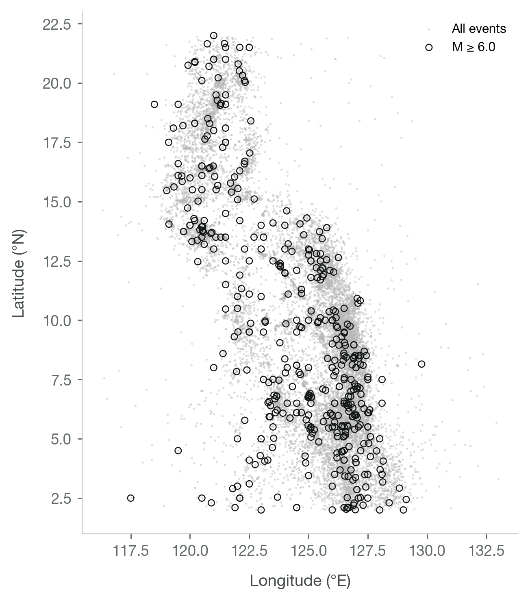
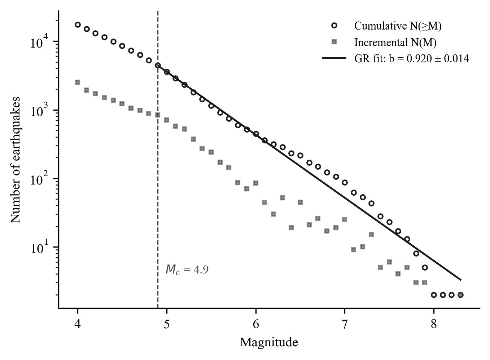
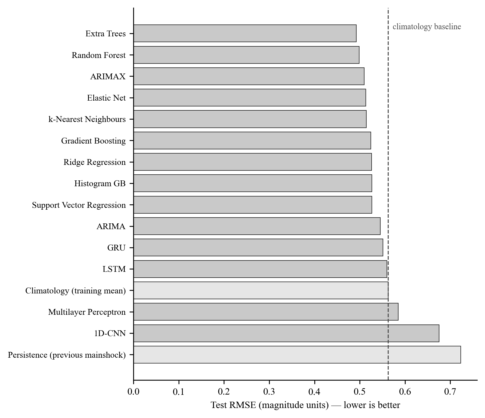

Undergraduate thesis, 2026
Can foreshocks forecast the mainshock?
A 119-year PHIVOLCS catalogue, mapped fault distances, 16 models, and an honest account of how little signal foreshocks carry.
A century of Philippine seismicity, and what it can honestly support
The Philippine Institute of Volcanology and Seismology has logged earthquakes along the archipelago since 1907. This study uses the whole retrievable archive: every event with a complete origin time, epicentre, depth, and at least one reported magnitude.
Cleaning that archive is where most of the honest work sits. The four magnitude scales in the bulletin are almost never co-reported with moment magnitude, so no defensible conversion could be fitted from this catalogue alone. Working magnitude falls back to the first available scale in the order Mw, Ms, mb, ML, and the paper says so plainly rather than implying a homogeneous record.
The catalogue is also complete only from magnitude 4.0 upward, because that is where PHIVOLCS begins publishing. Fitting the Gutenberg-Richter relation above a completeness magnitude of 4.9 gives a b-value of 0.920 with a standard error of 0.014, which is what a subduction margin should produce.
Each event also carries its distance to the nearest active fault, measured against fault lines mapped in QGIS. Two in five events sit within 25 km of a mapped fault and the median distance is 33 km. Recomputing those distances from the coordinates agrees with the supplied values for 98.2% of events to within a kilometre, the residual being a rounding effect that grows with distance and is immaterial inside the 100 km observation radius.


- Window
- 14 days
- Radius
- 100 km
- Target
- M 5.0 and above
- Split
- 60 / 20 / 20
- Seed
- 42
From a raw bulletin to a forecast the calendar cannot cheat
Every step below was chosen to stop the model from learning something it would not know in advance.
Maeda's method, as set out by Hirose and colleagues, removes the small dependent events that trail a larger one. An event is dependent when it falls inside the earlier event's space and time window and is at least one magnitude unit smaller, which is what keeps the procedure from deleting the mainshocks the study is trying to forecast.
Each mainshock of magnitude 5.0 or more contributes one record, built from the catalogued events within 100 km during the 14 days before it. The window closes strictly before the mainshock origin time. Windows are drawn from the full catalogue rather than the declustered one, because the small events Maeda's method strips out are precisely the precursory activity worth measuring.
Twenty-seven quantities describe each window. Twenty-two come from the published feature table: basic counts and magnitudes, the Gutenberg-Richter a and b values by two estimators, seismic energy release and magnitude deficit, two rate-change statistics, and the time since the last large regional earthquake. Five more summarise how far the foreshocks sit from the nearest mapped fault. The mainshock's own fault distance is excluded, being a property of the event under forecast.
Splitting is strictly by time. Every validation sequence postdates every training sequence and every test sequence postdates both, first through expanding-window rolling-origin validation and then once on an untouched test partition. A shuffled split would let a model learn from the future of its own test set, which is the most common way a seismic forecasting result turns out to be an artefact.
Tree ensembles win, and a third of the field cannot beat the historical average
Sixteen forecasters ran on identical sequences. The result is modest, and reporting it as modest is the point.

| Model | RMSE | R squared | Skill |
|---|---|---|---|
| Extra Trees | 0.492 | 0.147 | +23.6% |
| Random Forest | 0.498 | 0.125 | +21.6% |
| ARIMAX | 0.510 | 0.085 | +18.0% |
| Elastic Net | 0.513 | 0.073 | +17.0% |
| k-Nearest Neighbours | 0.514 | 0.068 | +16.6% |
| GRU | 0.551 | -0.069 | +4.2% |
| LSTM | 0.560 | -0.103 | +1.2% |
| Climatology baseline | 0.563 | -0.116 | 0.0% |
| Multilayer Perceptron | 0.585 | -0.206 | -8.0% |
| 1D-CNN | 0.675 | -0.606 | -43.9% |
What the numbers say
An Extra Trees ensemble on the 27 engineered features cuts squared error by 23.6% against simply quoting the historical average magnitude. That is real skill, and it is small. In magnitude units the typical error is still about half a unit, which is the difference between a tremor and a damaging event.
The recurrent networks do not earn their complexity
The GRU and the LSTM land just ahead of the baseline, at 4.2% and 1.2% skill, and every tree ensemble beats them by a wide margin. ARIMAX, a classical time-series model the original methodology never mentions, outperforms all of them. With 428 training sequences of ten timesteps each there is not enough data for a recurrent architecture to pay for its parameters.
Fault distance earns its place
Adding the distance from each foreshock to the nearest mapped fault lifted the best model from 21.4% to 23.6% skill. Three of the five fault features rank fifth, sixth and seventh of 27 by permutation importance, together carrying 18% of the total. The other two measure nothing the model can use.
Where the signal actually lives
Treating the forecast as an alarm for magnitude 6.0 gives an ROC AUC of 0.699 against 0.50 for chance. The model ranks dangerous sequences better than coin-flipping, even though its point forecasts are blunt.
Run the model on a foreshock sequence
Four trained models running in your browser on the events you give them, fault distances included.
Real sequences from the held-out test partition, so the observed outcome is known.
The epicentre of the sequence and the moment you are forecasting from. Regional history and the distance to the nearest mapped fault are both resolved from the catalogue at that point.
| Days before | Magnitude | Lat N | Lon E | Depth km | Remove |
|---|
Loading the trained models.
What this cannot do
A forecasting paper is only as trustworthy as the list of things it refuses to claim.
It does not say when or where
The model estimates the magnitude a mainshock would reach given a foreshock sequence already in progress. It does not forecast the time or the location of an earthquake, and nothing here should be read as an early-warning capability.
Most large events arrive unannounced
Of 3,261 candidate mainshocks, only 535 had enough catalogued activity in the preceding fortnight to support a forecast at all. A foreshock-based method is silent for the great majority of damaging earthquakes.
The record grew with the network
Recorded events rise sharply through the 1970s and after, tracking the expansion of the monitoring network rather than a change in the ground. Any temporal trend in the catalogue confounds the two.
Fault distance is only as good as the map
Distances are measured to fault lines digitised in QGIS, and the browser resolves a distance by taking the nearest of the 797 points the catalogue uses. That reproduces the mapped assignment for 99.7% of events and is at most 0.24 km further out for the rest, but a fault absent from the layer is invisible to the model.
Eight major events in the whole record
Only eight sequences in the modelling set end in a magnitude 7.0 or greater mainshock. Class agreement measured by Cohen's kappa is near zero, and the three-class forecast collapses onto the common class.
- Degree
- BS Civil Engineering
- Year
- 2026
- Goals
- SDG 9 and 11
Lyceum of the Philippines University, Cavite
A Machine Learning Model for Forecasting Mainshock Magnitudes Using PHIVOLCS Foreshock Data
Submitted to the Faculty of the College of Engineering and Architecture in partial fulfilment of the requirements for the degree of Bachelor of Science in Civil Engineering.